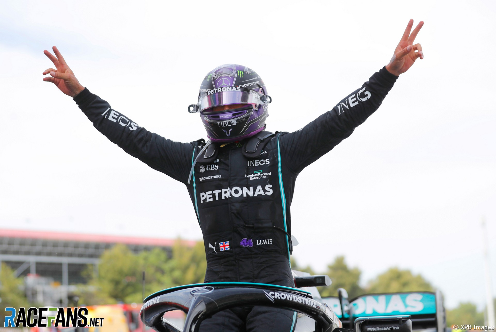

британски је возач Формуле 1, који тренутно вози за Мерцедес. Седмоструки је светски шампион и сматра се најбољим возачем своје генерације и једним од најбољих свих времена. Каријеру у формули 1 почео је 2007. године у Макларену, са којим је 2008. освојио прву титулу. Године 2013. прешао у Мерцедес, са којим је освојио двије титуле заредом, 2014. и 2015. Након што је 2016. завршио иза тимског колеге Ника Розберга, освојио је четири титуле заредом 2017, 2018 , 2019 и 2020. Возач је са највише пол позиција и победа у историји Формуле 1. Рекорд од 7 шампионских титула дели са Михаелом Шумахером.
